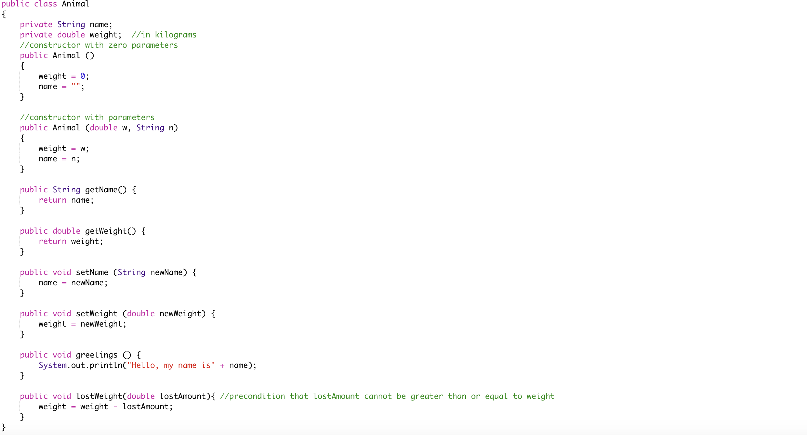
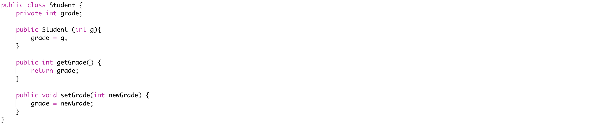

Back to Tutorials
OOP
What is Object-Oriented Programming?
Java is a programming language designed to model real life objects and their behaviours and characteristics. Object-oriented programming (OOP) is a way of writing computer programs using the idea of "objects” to represent data and methods. OOP relies on the concept of classes and objects. It is used to structure a software program into simple, reusable pieces of code blueprints (usually called classes) which are used to create individual instances of objects
More about objects
In OOP, computer programs use objects that interact with one another and change the data in those objects, to work in a way that
the user wants. An object in programming terms is a basic unit of Object Oriented Programming and is considered as something that can perform a set of
activities that defines behaviour. A typical Java program creates many objects which interact by invoking methods. An object consists of : a state,
behaviour, and identity. Each software object has an identity as they each occupy a designated chunk of memory. Software objects have states, also
known as variables which contain values that determine the state of the object. Last but not least, software objects have behaviour, as they contain
methods that enable the object to perform and executes something when one of the methods are run.
A class is a description of a possible object, and is used when an object is created. The new operator is used with a constructor to create an object.
Constructors
Every class must have a constructor. A constructor will always have the same name as the class. Constructors often are used with
values called parameters that are to be stored in the data part of the object that is created. They are commonly used to initialize an object’s fields.
A constructor can take no parameters which is known as the "no-arguments" constructor. There can also be more than one constructor in the class with different
parameters, meaning that they are overloaded but still create the same type of object.
public Fraction (Fraction other){
num = other.num;
denom = other.denom;
}
public Fraction() //the no args constructor
num = 0;
denom = 1;
}
Static Methods
In Java, a static characteristic of a class definition is not shared by its objects. There is only one class definition for a given class,
so when a program is running, if something is static then there is only one of it.The methods that belong to a class definition are called static methods.
A static method is part of a class definition, but is not part of the objects it creates. A program can execute a static method without first creating an object!
All other non-static methods exist only when they are part of an object. So an object must be created before they can be executed.
This example below shows the general description of an Animal object.

The instantiation to create an Animal object would be as follows:
Animal dog = new Animal(5.3, “Hazel”);
The variable dog would be a reference variable for the object and the dataType would be Animal. The double value 5.3 and the String “Hazel” is passed as the parameters into the creation of the variable, and is passed as the weight and name parameters of the Animal constructor.
Dot Notation
The variables and methods of an object are called the members of that object. The members of an object are accessed using dot notation. For example:
dog.loseWeight(1.2);
This method would call the loseWeight method in the Animal class and modify the variable weight for the dog object.
Encapsulation
Encapsulation is the ability of an object to be a container for related properties and methods. Data hiding allows the objects to shield variables from external access by using accessor and mutator methods instead. In order to hide variables from other classes, the keyword private is used. For example, the number of eggs laid variable could be specified as hidden or private to the Bird object. This process is called encapsulation. An example of an encapsulated class would be as follows as the instance variable is private but it’s accessor and mutator methods are public:

Hopefully, this tutorial has given you a better idea about Object Oriented Programming and the important concepts.
Back to Tutorials